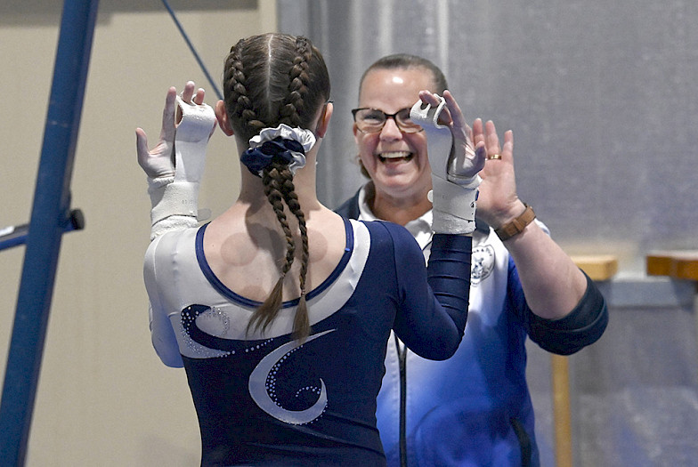
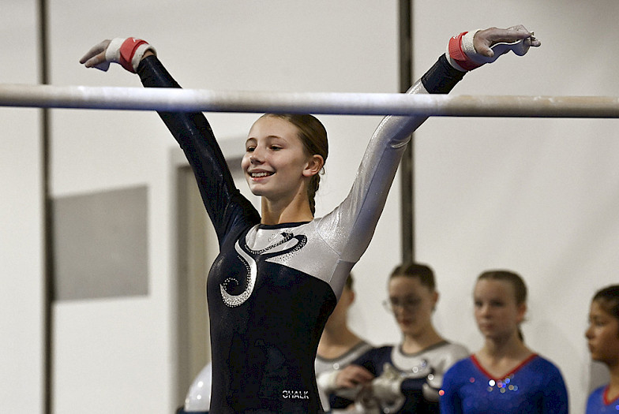

I'll be honest, I almost missed this one. With all the craziness of States, I genuinely thought the season was done and dusted. But the smaller events need our support just as much as the bigger ones, so here we are.
Before we get into it, an apology to the Blue Lake community. Your invitational fell right around the time States happened, so unfortunately there won't be a write-up for that competition, but you can view the full results here.
Now, let's get into the Natimuk Invitational.
BACK ON HOME FLOOR
This one carried a bit of extra weight. As The Weekly Advertiser reported, it was the first competition Natimuk and District Gymnastic Club has hosted since a fire devastated the club in January. Head coach Lynette Morrow told the paper that despite only being back training for 14 weeks, the kids still came away with placings and personal bests. "The kids were really proud to be back in their own club and be hosting the competition," she said.

The rebuild isn't finished. According to the paper, the club still needs more matting, work on the vault and pit area hasn't started yet, and more kindergym equipment would let them run more classes at once and bring more children back. Money raised from the raffles and catering over the weekend all goes towards replacing what was lost.
Eleven clubs made the trip, from Mildura, Wyndham, Strive, Eureka, Blue Lake, Portland, Stawell, Hamilton, Ararat and Sunbury, plus Millicent from across the South Australian border. More than 90 gymnasts competed across Levels 5 to 10, with another 23 teams across Levels 3 and 4.
CASTLEMAN AND NATIMUK DELIVER IN LEVEL 7
Natimuk got a win on home turf in Level 7 Division 2. Home gymnast Madeline Castleman won on 42.1, with the best vault (11.5) and the best bars (9.9) in the division. Wyndham's Chloe Grant took silver on 40.55 and Mildura's Lily Muller rounded out the podium on 40.35, taking gold on beam with 10.6 along the way. Clubmate Elsa Drendel was fourth on 39.15, and Lauren Rudolph scored 35.7 in what looks like her first Level 7 start in our records. Together they gave Natimuk the team title on 116.95, with a combined Wyndham, Blue Lake and Mildura squad in silver on 115.0.
In Level 7 Division 1, Wyndham's three gymnasts made up the whole field. Emmy Long won on 42.0, with 11.0 on beam and 9.55 on bars, from Charlotte Brilliant (40.9), whose 11.4 vault was the top score of the division, and Ellaweese Kerr (38.6).
JENNINGS EDGES YETMAN IN THE BIGGEST FIELD OF THE DAY
Level 5 Division 3 drew 42 gymnasts, and the top three were split by just 0.125. Blue Lake's Quinn Jennings won on 34.425, built on a 9.2 vault, the best in the field. Mildura's Mia Yetman was 0.05 back in silver on 34.375, her best all-around score of the 2026 season, and clubmate Ava Attrill rounded out the podium on 34.3, also her best of the season, with the top bars score of the division (8.9).
Millicent's Harper Zalme was fourth on 33.8, and the best of the home gymnasts was Isla Lannin in sixth on 33.525, who took gold on floor with 8.8. Mildura's Blue and White teams went one-two in the team event, 101.625 to 101.275, with Natimuk Blue rounding out the podium on 100.075.
Level 5 Division 3, All-Around (Top 6)
| # | Gymnast | Club | VT | UB | BB | FX | Total |
|---|---|---|---|---|---|---|---|
| 1 | Quinn Jennings | Blue Lake | 9.200 | 8.600 | 8.725 | 7.900 | 34.425 |
| 2 | Mia Yetman | Mildura | 9.000 | 8.450 | 8.550 | 8.375 | 34.375 |
| 3 | Ava Attrill | Mildura | 8.550 | 8.900 | 8.575 | 8.275 | 34.300 |
| 4 | Harper Zalme | Millicent | 8.850 | 8.800 | 7.900 | 8.250 | 33.800 |
| 5 | Isla Attrill | Mildura | 8.750 | 8.550 | 8.275 | 8.100 | 33.675 |
| 6 | Isla Lannin | Natimuk | 8.650 | 8.150 | 7.925 | 8.800 | 33.525 |
Over in Level 5 Division 2, Eureka's three gymnasts had the field to themselves. Brooke Johnston won on 34.4, her best score of the 2026 season, with Isabelle Lawless (33.925) and Brooke Stevenson (33.125) completing the podium.
EMENY TOPS LEVEL 6, MILDURA TAKES THE TEAM TITLE
In Level 6 Division 3, Strive's Olivia Emeny won on 33.95, with the best bars (9.3) and beam (8.6) in the division. Mildura filled the next two places, Aska Zahd on 33.375 and Hallie Fiebig on 33.15. Mildura Blue won the team title on 99.378, with Strive 0.578 back in silver and Mildura White on 98.275 for bronze. Natimuk's Jayda Hallam shared the top vault score of the division with Mildura's Lucy McCully, both on 8.7.

Level 6 Division 2 was a Strive pair. Pippa McLeod won on 33.675, including a 9.55 on bars, with Ruby Colgate in silver on 32.775.
NATIMUK BLUE WINS LEVEL 4 DIVISION 3
The other home win came in the Level 4 Division 3 team event. Natimuk Blue took the title on 105.3, with the best vault of the eight teams (27.25), with a combined Eureka and Sunbury team just 0.225 back in silver on 105.075, and Wyndham rounding out the podium on 102.125. Natimuk fielded three teams in all, with Silver fourth and White seventh.
Wyndham won Level 4 Division 2 on 104.775, with Mildura Blue and White separated by just 0.075 for silver and bronze. In Level 3 Division 3, Hamilton won a twelve-team field on 99.45, with Natimuk Blue in silver on 98.1, helped by the best floor of the division (25.85), and Stawell Red rounding out the podium on 96.9.
THE SENIORS
In Level 8 Division 2, Mildura's Clare Emmett won on 41.55, with clubmates Amber Richards (39.7) and Ruby Pullen (39.45) in silver and bronze, and Mildura won the team title on 118.7. Wyndham's Chloe Hume was the only Level 8 Division 1 entrant, scoring 43.6, with 11.7 on vault and 11.15 on bars.
Portland's Mia McDowell backed up her Blue Lake win with another in Level 9 Division 2, scoring 42.85 with a 12.15 vault, the highest apparatus score of the competition. Mildura's Layla Adams (40.8) and Annabel Screaton (40.2, her best of the 2026 season) took silver and bronze.
And in Level 10 Division 2, Mildura's Avaleigh Hazer won on 38.65, with Natimuk's Eva Drendel just 0.25 back in silver, and Drendel's 10.5 on beam was the best in the division.
BIGGER AND BETTER
The invitational closed out Natimuk's 2026 competition season, and Morrow told the paper the club is looking forward to a bigger and better 2027. After the year they've had, getting back on their own floor, in front of their own community, with a few medals around their necks, seems like a pretty good place to finish.
Full results from the 2026 Natimuk Invitational are up on the results page.